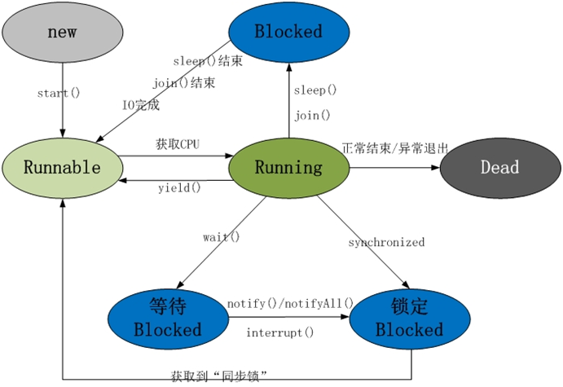

第3章JavaSE¶
3.1 你是怎样理解面向对象的¶
面向对象是利于语言对现实事物进行抽象。面向对象具有以下四大特征：
（1）继承：继承是从已有类得到继承信息创建新类的过程
（2）封装：通常认为封装是把数据和操作数据的方法绑定起来，对数据的访问只能通过已定义的接口。
（3）多态性：多态性是指允许不同子类型的对象对同一消息作出不同的响应。
（4）抽象：抽象是将一类对象的共同特征总结出来构造类的过程，包括数据抽象和行为抽象两方面。
3.2 int和Integer有什么区别，以及以下程序结果¶
（1）Integer是int的包装类，int则是java的一种基本数据类型
（2）Integer变量必须实例化后才能使用，而int变量不需要
（3）Integer实际是对象的引用，当new一个Integer时，实际上是生成一个指针指向此对象；而int则是直接存储数据值
（4）Integer的默认值是null，int的默认值是0
1. package com.atguigu.interview.chapter03;
2.
3. /**
4. * @author helen
5. * @since 2019/7/28
6. */
7. public class Test01 {
8.
9. public static void main(String[] args){
10. Integer a = 127;
11. Integer b = 127;
12. Integer c = 128;
13. Integer d = 128;
14. System.out.println(a==b); //true
15. System.out.println(c==d); //false
16. }
17. }
3.3 ==和Equals区别¶
（1） ==
如果比较的是基本数据类型，那么比较的是变量的值
如果比较的是引用数据类型，那么比较的是地址值（两个对象是否指向同一块内存）
（2） equals
如果没重写equals方法比较的是两个对象的地址值
如果重写了equals方法后我们往往比较的是对象中的属性的内容
equals方法是从Object类中继承的，默认的实现就是使用==
3.4谈谈你对反射的理解¶
（1）反射机制:
所谓的反射机制就是java语言在运行时拥有一项自观的能力。通过这种能力可以彻底的了解自身的情况为下一步的动作做准备。
Java的反射机制的实现要借助于4个类：class，Constructor，Field，Method;
其中class代表的时类对象，Constructor－类的构造器对象，Field－类的属性对象，Method－类的方法对象。通过这四个对象我们可以粗略的看到一个类的各个组成部分。
（2）Java反射的作用：
在Java运行时环境中，对于任意一个类，可以知道这个类有哪些属性和方法。对于任意一个对象，可以调用它的任意一个方法。这种动态获取类的信息以及动态调用对象的方法的功能来自于Java 语言的反射（Reflection）机制。
（3）Java反射机制提供功能
在运行时判断任意一个对象所属的类。
在运行时构造任意一个类的对象。
在运行时判断任意一个类所具有的成员变量和方法。
在运行时调用任意一个对象的方法
3.5 ArrarList和LinkedList区别¶
（1）ArrayList是实现了基于动态数组的数据结构，LinkedList基于链表的数据结构。
（2）对于随机访问get和set，ArrayList觉得优于LinkedList，因为LinkedList要移动指针。
（3）对于新增和删除操作add和remove，LinkedList比较占优势，因为ArrayList要移动数据。这一点要看实际情况的。若只对单条数据插入或删除，ArrayList的速度反而优于LinkedList。但若是批量随机的插入删除数据，LinkedList的速度大大优于ArrayList. 因为ArrayList每插入一条数据，要移动插入点及之后的所有数据。
3.6HashMap底层源码，数据结构¶
HashMap的底层结构在jdk1.7中由数组+链表实现，在jdk1.8中由数组+链表+红黑树实现，以数组+链表的结构为例。
JDK1.8之前Put方法：

JDK1.8之后Put方法：
3.7 HashMap和HashTable区别¶
（1）线程安全性不同
HashMap是线程不安全的，HashTable是线程安全的，其中的方法是Synchronize的，在多线程并发的情况下，可以直接使用HashTabl，但是使用HashMap时必须自己增加同步处理。
（2）是否提供contains方法
HashMap只有containsValue和containsKey方法；HashTable有contains、containsKey和containsValue三个方法，其中contains和containsValue方法功能相同。
（3）key和value是否允许null值
Hashtable中，key和value都不允许出现null值。HashMap中，null可以作为键，这样的键只有一个；可以有一个或多个键所对应的值为null。
（4）数组初始化和扩容机制
HashTable在不指定容量的情况下的默认容量为11，而HashMap为16，Hashtable不要求底层数组的容量一定要为2的整数次幂，而HashMap则要求一定为2的整数次幂。
Hashtable扩容时，将容量变为原来的2倍加1，而HashMap扩容时，将容量变为原来的2倍。
3.8 TreeSet和HashSet区别¶
HashSet是采用hash表来实现的。其中的元素没有按顺序排列，add()、remove()以及contains()等方法都是复杂度为O(1)的方法。
TreeSet是采用树结构实现(红黑树算法)。元素是按顺序进行排列，但是add()、remove()以及contains()等方法都是复杂度为O(log (n))的方法。它还提供了一些方法来处理排序的set，如first(), last(), headSet(), tailSet()等等。
3.9 String buffer和String builder区别¶
（1）StringBuffer 与 StringBuilder 中的方法和功能完全是等价的，
（2）只是StringBuffer 中的方法大都采用了 synchronized 关键字进行修饰，因此是线程安全的，而 StringBuilder 没有这个修饰，可以被认为是线程不安全的。
（3）在单线程程序下，StringBuilder效率更快，因为它不需要加锁，不具备多线程安全而StringBuffer则每次都需要判断锁，效率相对更低
3.10 Final、Finally、Finalize¶
final：修饰符（关键字）有三种用法：修饰类、变量和方法。修饰类时，意味着它不能再派生出新的子类，即不能被继承，因此它和abstract是反义词。修饰变量时，该变量使用中不被改变，必须在声明时给定初值，在引用中只能读取不可修改，即为常量。修饰方法时，也同样只能使用，不能在子类中被重写。
finally：通常放在try…catch的后面构造最终执行代码块，这就意味着程序无论正常执行还是发生异常，这里的代码只要JVM不关闭都能执行，可以将释放外部资源的代码写在finally块中。
finalize：Object类中定义的方法，Java中允许使用finalize() 方法在垃圾收集器将对象从内存中清除出去之前做必要的清理工作。这个方法是由垃圾收集器在销毁对象时调用的，通过重写finalize() 方法可以整理系统资源或者执行其他清理工作。
3.11 什么是 java 序列化，如何实现 java 序列化？¶
序列化就是一种用来处理对象流的机制，所谓对象流也就是将对象的内容进行流化。可以对流化后的对象进行读写操作，也可将流化后的对象传输于网络之间。序列化是为了解决在对对象流进行读写操作时所引发的问题。
序列化的实现：将需要被序列化的类实现 Serializable 接口，该接口没有需要实现的方法， implements Serializable 只是为了标注该对象是可被序列化的，然后使用一个输出流(如：FileOutputStream)来构造一个ObjectOutputStream(对象流)对象，接着，使用 ObjectOutputStream 对象的 writeObject(Object obj)方法就可以将参数为 obj 的对象写出(即保存其状态)，要恢复的话则用输入流。
3.12 Object中有哪些方法¶
（1）protected Object clone()--->创建并返回此对象的一个副本。 （2）boolean equals(Object obj)--->指示某个其他对象是否与此对象“相等”。 （3）protected void finalize()--->当垃圾回收器确定不存在对该对象的更多引用时，由对象的垃圾回收器调用此方法。 （4）Class<? extendsObject> getClass()--->返回一个对象的运行时类。 （5）int hashCode()--->返回该对象的哈希码值。 （6）void notify()--->唤醒在此对象监视器上等待的单个线程。 （7）void notifyAll()--->唤醒在此对象监视器上等待的所有线程。 （8）String toString()--->返回该对象的字符串表示。 （9）void wait()--->导致当前的线程等待，直到其他线程调用此对象的 notify() 方法或 notifyAll() 方法。 void wait(long timeout)--->导致当前的线程等待，直到其他线程调用此对象的 notify() 方法或 notifyAll()方法，或者超过指定的时间量。 void wait(long timeout, int nanos)--->导致当前的线程等待，直到其他线程调用此对象的 notify()
3.13线程有几种状态，产生的条件是什么¶

（1）新建状态(New) ：线程对象被创建后，就进入了新建状态。例如，Thread thread = new Thread()。 （2）就绪状态(Runnable): 也被称为“可执行状态”。线程对象被创建后，其它线程调用了该对象的start()方法，从而来启动该线程。例如，thread.start()。处于就绪状态的线程，随时可能被CPU调度执行。 （3）运行状态(Running)：线程获取CPU权限进行执行。需要注意的是，线程只能从就绪状态进入到运行状态。 （4）阻塞状态(Blocked)：阻塞状态是线程因为某种原因放弃CPU使用权，暂时停止运行。直到线程进入就绪状态，才有机会转到运行状态。阻塞的情况分三种：
l 等待阻塞 -- 通过调用线程的wait()方法，让线程等待某工作的完成。
l 同步阻塞 -- 线程在获取synchronized同步锁失败(因为锁被其它线程所占用)，它会进入同步阻塞状态。
l 其他阻塞 -- 通过调用线程的sleep()或join()或发出了I/O请求时，线程会进入到阻塞状态。当sleep()状态超时、join(）等待线程终止或者超时、或者I/O处理完毕时，线程重新转入就绪状态。
（5）死亡状态(Dead)：线程执行完了或者因异常退出了run()方法，该线程结束生命周期。
3.14产生死锁的基本条件¶
产生死锁的原因： （1）因为系统资源不足。 （2）进程运行推进的顺序不合适。 （3）资源分配不当等。 如果系统资源充足，进程的资源请求都能够得到满足，死锁出现的可能性就很低，否则 就会因争夺有限的资源而陷入死锁。其次，进程运行推进顺序与速度不同，也可能产生死锁。 产生死锁的四个必要条件：
（1） 互斥条件：一个资源每次只能被一个进程使用。 （2） 请求与保持条件：一个进程因请求资源而阻塞时，对已获得的资源保持不放。 （3） 不剥夺条件:进程已获得的资源，在末使用完之前，不能强行剥夺。 （4） 循环等待条件:若干进程之间形成一种头尾相接的循环等待资源关系。 这四个条件是死锁的必要条件，只要系统发生死锁，这些条件必然成立，而只要上述条件之一不满足，就不会发生死锁。 死锁的解除与预防： 理解了死锁的原因，尤其是产生死锁的四个必要条件，就可以最大可能地避免、预防和 解除死锁。所以，在系统设计、进程调度等方面注意如何不让这四个必要条件成立，如何确 定资源的合理分配算法，避免进程永久占据系统资源。此外，也要防止进程在处于等待状态 的情况下占用资源。因此，对资源的分配要给予合理的规划。
3.15什么是线程池，如何使用？¶
线程池就是事先将多个线程对象放到一个容器中，当使用的时候就不用 new 线程而是直接去池中拿线程即可，节省了开辟子线程的时间，提高的代码执行效率。
在 JDK 的 java.util.concurrent.Executors 中提供了生成多种线程池的静态方法。
ExecutorService newCachedThreadPool = Executors.newCachedThreadPool();
ExecutorService newFixedThreadPool = Executors.newFixedThreadPool(4);
ScheduledExecutorServicenewScheduledThreadPool = Executors.newScheduledThreadPool(4);
ExecutorService newSingleThreadExecutor = Executors.newSingleThreadExecutor();
然后调用他们的 execute 方法即可。
优点：
第一：降低资源消耗。通过重复利用已创建的线程降低线程创建和销毁造成的消耗。
第二：提高响应速度。当任务到达时，任务可以不需要等到线程创建就能立即执行。
第三：提高线程的可管理性。线程是稀缺资源，如果无限制的创建，不仅会消耗系统资源，还会降低系统的稳定性，使用线程池可以进行统一的分配，调优和监控。
3.16 Java自带有哪几种线程池？¶
（1）newCachedThreadPool
创建一个可缓存线程池，如果线程池长度超过处理需要，可灵活回收空闲线程，若无可回收，则新建线程。这种类型的线程池特点是：
工作线程的创建数量几乎没有限制(其实也有限制的,数目为Interger. MAX_VALUE), 这样可灵活的往线程池中添加线程。
如果长时间没有往线程池中提交任务，即如果工作线程空闲了指定的时间(默认为1分钟)，则该工作线程将自动终止。终止后，如果你又提交了新的任务，则线程池重新创建一个工作线程。
在使用CachedThreadPool时，一定要注意控制任务的数量，否则，由于大量线程同时运行，很有会造成系统瘫痪。
（2）newFixedThreadPool
创建一个指定工作线程数量的线程池。每当提交一个任务就创建一个工作线程，如果工作线程数量达到线程池初始的最大数，则将提交的任务存入到池队列中。FixedThreadPool是一个典型且优秀的线程池，它具有线程池提高程序效率和节省创建线程时所耗的开销的优点。但是，在线程池空闲时，即线程池中没有可运行任务时，它不会释放工作线程，还会占用一定的系统资源。
（3）newSingleThreadExecutor
创建一个单线程化的Executor，即只创建唯一的工作者线程来执行任务，它只会用唯一的工作线程来执行任务，保证所有任务按照指定顺序(FIFO, LIFO, 优先级)执行。如果这个线程异常结束，会有另一个取代它，保证顺序执行。单工作线程最大的特点是可保证顺序地执行各个任务，并且在任意给定的时间不会有多个线程是活动的。
（4）newScheduleThreadPool
创建一个定长的线程池，而且支持定时的以及周期性的任务执行。例如延迟3秒执行。
3.17 Java 中有几种类型的流¶
3.18字节流如何转为字符流¶
字节输入流转字符输入流通过 InputStreamReader 实现，该类的构造函数可以传入 InputStream 对象。
字节输出流转字符输出流通过OutputStreamWriter 实现，该类的构造函数可以传入 OutputStream 对象。
3.19请写出你最常见的5个RuntimeException¶
（1）java.lang.NullPointerException 空指针异常；出现原因：调用了未经初始化的对象或者是不存在的对象。
（2）java.lang.ClassNotFoundException 指定的类找不到；出现原因：类的名称和路径加载错误；通常都是程序试图通过字符串来加载某个类时可能引发异常。
（3）java.lang.NumberFormatException 字符串转换为数字异常；出现原因：字符型数据中包含非数字型字符。
（4）java.lang.IndexOutOfBoundsException 数组角标越界异常，常见于操作数组对象时发生。
（5）java.lang.IllegalArgumentException 方法传递参数错误。
（6）java.lang.ClassCastException 数据类型转换异常。
3.20JDK和JRE有什么区别？¶
（1）JRE是Java运行时环境，就是Java程序必须运行在JRE上面，它就是执行Java程序的虚拟机。
（2）JDK是包含JRE的，它比JRE多了一些工具，这些多出来的工具就是让我们程序员来开发Java程序的。
（3）JDK包含JRE，编译器和其他的工具(比如：JavaDoc，Java调试器)，可以让开发者开发、编译、执行Java应用程序
（4）JDK面向开发者，JRE面向程序使用者
3.21两个对象的 hashCode()相同，则 equals()也一定为 true，对吗？¶
（1）两个对象equals相等，则它们的hashcode必须相等，反之则不一定。
（2）两个对象==相等，则其hashcode一定相等，反之不一定成立
3.22final 在 java 中有什么作用？¶
final作为Java中的关键字可以用于三个地方。用于修饰类、类属性和类方法。
特征：凡是引用final关键字的地方皆不可修改！
(1)修饰类：表示该类不能被继承；
(2)修饰方法：表示方法不能被重写；
(3)修饰变量：表示变量只能一次赋值以后值不能被修改（常量）。
3.23 java 中的 Math.round(-1.5) 等于多少？¶
Math.round(-1.5)的返回值是-1。四舍五入的原理是在参数上加0.5然后做向下取整
3.24String 属于基础的数据类型吗？¶
在Java中，数据类型分为引用类型和基本类型，基本类型分为八种
整型byte，short，int,long
浮点型：float，double
字符型：char
Boolean型：boolean
String不是基本的数据类型，是final修饰的java类，是引用类型。
3.25 java 中操作字符串都有哪些类？它们之间有什么区别？¶
主要是一下三种：String、StringBuffer、StringBuilder
特别是在项目中。先来看一下这三种操作方式的区别：
String是不可变的对象，对每次对String类型的改变时都会生成一个新的对象，
StringBuffer和StringBuilder是可以改变对象的。
对于操作效率：StringBuilder > StringBuffer > String
对于线程安全：StringBuffer 是线程安全，可用于多线程；
StringBuilder 是非线程安全，用于单线程
不频繁的字符串操作使用 String。反之，StringBuffer 和 StringBuilder 都优于String
所以，如果在项目中需要拼接字符串最好是采用StringBuffer 而非String.
3.26String str="i"与 String str=new String(“i”)一样吗？¶
不一样，因为内存的分配方式不一样。String str="i"的方式，Java 虚拟机会将其分配到常量池中；而 String str=new String(“i”) 则会被分到堆内存中。
3.27如何将字符串反转？¶
使用StringBuffer或者StringBuilder中的reverse()方法。
3.28String 类的常用方法都有那些？¶
indexOf() 返回指定字符得索引
charAt() 返回指定索引处得字符
repalce() 字符串替换
trim() 去除字符串两端的空白
split() 分割字符串返回分割后的字符串数组
getBytes() 返回字符串的byte类型数组
length() 返回字符串的长度
toLowerCase() 字符串转小写
toUpperCase() 字符串转大写
substring() 截取字符串
equals() 字符串比较
3.29抽象类必须要有抽象方法吗？¶
抽象类可以没有抽象方法，但是如果你的一个类已经声明成了抽象类，即使这个类中没有抽象方法，它也不能再实例化，即不能直接构造一个该类的对象。
如果一个类中有了一个抽象方法，那么这个类必须声明为抽象类，否则编译通不过。
3.30普通类和抽象类有哪些区别？¶
普通类不能包含抽象方法，抽象类可以包含抽象方法。
抽象类是不能被实例化的，就是不能用new调出构造方法创建对象，普通类可以直接实例化。
如果一个类继承于抽象类，则该子类必须实现父类的抽象方法。如果子类没有实现父类的抽象方法，则必须将子类也定义为abstract类。
3.31抽象类能使用 final 修饰吗？¶
不能，定义抽象类就是让其他类继承的，如果定义为 final 该类就不能被继承，这样彼此就会产生矛盾，所以 final 不能修饰抽象类，如下图所示，编辑器也会提示错误信息。
3.32接口和抽象类有什么区别？¶
他们都不能实例化对象，都可以包含抽象方法，而且抽象方法必须被继承的类全部实现。
区别：
1、抽象类和接口都不能直接实例化，如果要实例化，抽象类变量必须指向实现所有抽象方法的子类对象，接口变量必须指向实现所有接口方法的类对象。
2、抽象类要被子类继承，接口要被类实现。
3、接口只能做方法申明，抽象类中可以做方法申明，也可以做方法实现
4、接口里定义的变量只能是公共的静态的常量，抽象类中的变量是普通变量。
5、抽象类里的抽象方法必须全部被子类所实现，如果子类不能全部实现父类抽象方法，那么该子类只能是抽象类。同样，一个实现接口的时候，如不能全部实现接口方法，那么该类也只能为抽象类。
6、抽象方法只能申明，不能实现，接口是设计的结果，抽象类是重构的结果
7、抽象类里可以没有抽象方法
8、如果一个类里有抽象方法，那么这个类只能是抽象类
9、抽象方法要被实现，所以不能是静态的，也不能是私有的。
10、接口可继承接口，并可多继承接口，但类只能单根继承。
3.33java 中 IO 流分为几种？¶
按照流的流向分，可以分为输入流和输出流；
按照操作单元划分，可以划分为字节流和字符流；
按照流的角色划分为节点流和处理流。
Java Io流共涉及40多个类，这些类看上去很杂乱，但实际上很有规则，而且彼此之间存在非常紧密的联系， Java I0流的40多个类都是从如下4个抽象类基类中派生出来的。
InputStream/Reader: 所有的输入流的基类，前者是字节输入流，后者是字符输入流。
OutputStream/Writer: 所有输出流的基类，前者是字节输出流，后者是字符输出流。
按操作方式分类结构图：
3.34BIO、NIO、AIO 有什么区别？¶
1）BIO
在服务端启动一个ServerSocket，然后在客户端启动Socket来对服务端进行通信，默认情况下服务端需要对每个请求建立一堆线程等待请求，而客户端发送请求后，先咨询服务端是否有线程相应，如果没有则会一直等待或者遭到拒绝请求，如果有的话，客户端会线程会等待请求结束后才继续执行。
简单来说，用户进程在发起一个IO操作以后，必须等待IO操作的完成，只有当真正完成了IO操作以后，用户进程才能运行，BIO方式适用于连接数目比较小且固定的架构。
2）NIO
NIO基于Reactor，当socket有流可读或可写入socket时，操作系统会相应的通知引用程序进行处理，应用再将流读取到缓冲区或写入操作系统。 当一个连接创建后，不需要对应一个线程，这个连接会被注册到多路复用器上面，所以所有的连接只需要一个线程就可以搞定，当这个线程中的多路复用器进行轮询的时候，发现连接上有请求的话，才开启一个线程进行处理。
简单来说，用户进程发起一个IO操作以后边可返回做其它事情，但是用户进程需要时不时的询问IO操作是否就绪（引入不必要的CPU资源浪费）
NIO方式适用于连接数目多且连接比较短的架构。
BIO的每个连接一个单独的线程，而NIO则是每个连接共用一个线程。
3）AIO
当有流可读取时，操作系统会将可读的流传入read方法的缓冲区，并通知应用程序；对于写操作而言，当操作系统将write方法传递的流写入完毕时，操作系统主动通知应用程序。read/write方法都是异步的，完成后会主动调用回调函数。 AIO是一个有效请求一个线程。
简单来说，用户进程只需要发起一个IO操作然后立即返回，等IO操作真正的完成以后，应用程序会得到IO操作完成的通知。不需要进行实际的IO读写操作，因为真正的IO读取或者写入操作已经由内核完成了。
AIO方式使用于连接数目多且连接比较长的架构。
3.35Files的常用方法都有哪些？¶
Files. exists()：检测文件路径是否存在。
Files. createFile()：创建文件。
Files. createDirectory()：创建文件夹。
Files. delete()：删除一个文件或目录。
Files. copy()：复制文件。
Files. move()：移动文件。
Files. size()：查看文件个数。
Files. read()：读取文件。
Files. write()：写入文件。
3.36java 容器都有哪些？¶
如图所示
3.37Collection 和 Collections 有什么区别？¶
java.util.Collection 是一个集合接口（集合类的一个顶级接口）。它提供了对集合对象进行基本操作的通用接口方法。Collection接口在Java 类库中有很多具体的实现。Collection接口的意义是为各种具体的集合提供了最大化的统一操作方式，其直接继承接口有List与Set。
Collections则是集合类的一个工具类/帮助类，其中提供了一系列静态方法，用于对集合中元素进行排序、搜索以及线程安全等各种操作。
3.38List、Set、Map 之间的区别是什么？¶
3.39说一下 HashSet 的实现原理？¶
（1）基于HashMap实现的，默认构造函数是构建一个初始容量为16，负载因子为0.75 的HashMap。封装了一个 HashMap 对象来存储所有的集合元素，所有放入 HashSet 中的集合元素实际上由 HashMap 的 key 来保存，而 HashMap 的 value 则存储了一个 PRESENT，它是一个静态的 Object 对象。
（2）当我们试图把某个类的对象当成 HashMap的 key，或试图将这个类的对象放入 HashSet 中保存时，重写该类的equals(Object obj)方法和 hashCode() 方法很重要，而且这两个方法的返回值必须保持一致：当该类的两个的 hashCode() 返回值相同时，它们通过 equals() 方法比较也应该返回 true。通常来说，所有参与计算 hashCode() 返回值的关键属性，都应该用于作为 equals() 比较的标准。
（3）HashSet的其他操作都是基于HashMap的。
3.40如何决定使用 HashMap 还是 TreeMap？¶
对于在Map中插入、删除和定位元素这类操作，HashMap是最好的选择。然而，假如你需要对一个有序的key集合进行遍历，TreeMap是更好的选择。基于你的collection的大小，也许向HashMap中添加元素会更快，将map换为TreeMap进行有序key的遍历。
3.41如何实现数组和 List 之间的转换？¶
List转数组：toArray(arraylist.size()方法
数组转List：Arrays的asList(a)方法
3.42哪些集合类是线程安全的？¶
在集合框架中，有些类是线程安全的，这些都是jdk1.1中的出现的。在jdk1.2之后，就出现许许多多非线程安全的类。下面是这些线程安全的同步的类：
vector：就比arraylist多了个同步化机制（线程安全），因为效率较低，现在已经不太建议使用。在web应用中，特别是前台页面，往往效率（页面响应速度）是优先考虑的。
statck：堆栈类，先进后出
hashtable：就比hashmap多了个线程安全
enumeration：枚举，相当于迭代器
StringBuffer也是线程安全的，（StringBuilder 不是线程安全的）
除了这些之外，其他的都是非线程安全的类和接口。
线程安全的类其方法是同步的，每次只能一个访问。是重量级对象，效率较低。
3.43 Iterator 怎么使用？有什么特点？¶
1.Iterator在遍历元素过程中，有线程修改集合元素会有ConcurrentModificationEception异常
2.Iterator本身不具有装载数据功能，需依附Collection对象使用
3.next（）是用游标指向的方式返回下一个元素的
3.44Iterator 和 ListIterator 有什么区别？¶
我们需要知道的第一个则是：
（1）所属关系，ListIterator是一个Iterator的子类型。
（2）局限：只能应用于各种List类的访问。
（3）优势：Iterator只能向前移动，而ListIterator可以双向移动。
还可以产生相对于迭代器在列表中指向的当前位置的前一个和后一个元素的索引
nextIndex()、previousIndex()方法。
还可以通过set（）方法替换它访问过的最后一个元素。
还可以通过调用listIterator（）方法产生一个指向List开始处的ListIterator，当然也可以有参数，即指向索引为参数处的ListIterator。
（4）ListIterator 有 add() 方法，可以向 List 中添加对象，而 Iterator 不能
3.45创建线程有哪几种方式？¶
1.继承Thread类实现多线程
2.覆写Runnable()接口实现多线程，而后同样覆写run().推荐此方式
3.覆写Callable接口实现多线程（JDK1.5）
4.通过线程池启动多线程
3.46说一下 runnable 和 callable 有什么区别？¶
Runnable应该是比较熟悉的接口，它只有一个run()函数，用于将耗时操作写在其中，该函数没有返回值，不能将结果返回给客户程序。然后使用某个线程去执行runnable即可实现多线程，Thread类在调用start()函数后就是执行的是Runnable的run()函数。
Callable与Runnable的功能大致相似，Callable中有一个call()函数，但是call()函数有返回值。
主要区别：
Runnable 接口 run 方法无返回值；Callable 接口 call 方法有返回值，支持泛型
Runnable 接口 run 方法只能抛出运行时异常，且无法捕获处理；Callable 接口 call 方法允许抛出异常，可以获取异常信息
3.47sleep() 和 wait() 有什么区别？¶
sleep方法：
属于Thread类中的方法；会导致程序暂停执行指定的时间，让出cpu该其他线程，但是他的监控状态依然保持着，当指定时间到了之后，又会自动恢复运行状态；在调用sleep方法的过程中，线程不会释放对象锁。（只会让出CPU，不会导致锁行为的改变）
wait方法：
属于Object类中的方法；在调用wait方法的时候，线程会放弃对象锁，进入等待此对象的等待锁定池，只有针对此对象调用notify方法后本线程才进入对象锁定池准备。获取对象锁进入运行状态。（不仅让出CPU，还释放已经占有的同步资源锁）
3.48notify()和 notifyAll()有什么区别？¶
notify():
唤醒一个处于等待状态的线程，
注意的是在调用此方法的时候，
并不能确切的唤醒某一个等待状态的线程，
而是由JVM确定唤醒哪个线程，而且不是按优先级。
notifyAll():
唤醒所有处入等待状态的线程;
并可以理解为把他们排进一个队列;
只不过只有头部的线程获得了锁，才能运行;
注意！！并不是给所有唤醒线程一个对象的锁，而是让它们竞争，
当其中一个线程运行完就开始运行下一个已经被唤醒的线程，因为锁已经转移了。
3.49线程的 run()和 start()有什么区别？¶
run()方法：
是在主线程中执行方法，和调用普通方法一样；（按顺序执行，同步执行）
start()方法：
是创建了新的线程，在新的线程中执行；（异步执行）
3.50线程池中 submit()和 execute()方法有什么区别？¶
execute() 参数 Runnable ；submit() 参数 (Runnable) 或 (Runnable 和结果 T) 或 (Callable)
execute() 没有返回值；而 submit() 有返回值
submit() 的返回值 Future 调用get方法时，可以捕获处理异常
3.51在 java 程序中怎么保证多线程的运行安全？¶
线程的安全性问题体现在：
原子性：一个或者多个操作在 CPU 执行的过程中不被中断的特性
可见性：一个线程对共享变量的修改，另外一个线程能够立刻看到
有序性：程序执行的顺序按照代码的先后顺序执行
导致原因：
缓存导致的可见性问题
线程切换带来的原子性问题
编译优化带来的有序性问题
解决办法：
JDK Atomic开头的原子类、synchronized、LOCK，可以解决原子性问题
synchronized、volatile、LOCK，可以解决可见性问题
Happens-Before 规则可以解决有序性问题
Happens-Before 规则如下：
程序次序规则：在一个线程内，按照程序控制流顺序，书写在前面的操作先行发生于书写在后面的操作
管程锁定规则：一个unlock操作先行发生于后面对同一个锁的lock操作
volatile变量规则：对一个volatile变量的写操作先行发生于后面对这个变量的读操作
线程启动规则：Thread对象的start()方法先行发生于此线程的每一个动作
线程终止规则：线程中的所有操作都先行发生于对此线程的终止检测
线程中断规则：对线程interrupt()方法的调用先行发生于被中断线程的代码检测到中断事件的发生
对象终结规则：一个对象的初始化完成(构造函数执行结束)先行发生于它的finalize()方法的开始
3.52什么是死锁？¶
所谓死锁，是指多个进程在运行过程中因争夺资源而造成的一种僵局，当进程处于这种僵持状态时，若无外力作用，它们都将无法再向前推进。因此我们举个例子来描述，如果此时有一个线程A，按照先锁a再获得锁b的的顺序获得锁，而在此同时又有另外一个线程B，按照先锁b再锁a的顺序获得锁。如下图所示：
3.53怎么防止死锁？¶
预防死锁：
资源一次性分配：一次性分配所有资源，这样就不会再有请求了：（破坏请求条件）
只要有一个资源得不到分配，也不给这个进程分配其他的资源：（破坏请保持条件）
可剥夺资源：即当某进程获得了部分资源，但得不到其它资源，则释放已占有的资源（破坏不可剥夺条件）
资源有序分配法：系统给每类资源赋予一个编号，每一个进程按编号递增的顺序请求资源，释放则相反（破坏环路等待条件）
1、以确定的顺序获得锁
如果必须获取多个锁，那么在设计的时候需要充分考虑不同线程之前获得锁的顺序。按照上面的例子，两个线程获得锁的时序图如下：
那么死锁就永远不会发生。针对两个特定的锁，开发者可以尝试按照锁对象的hashCode值大小的顺序，分别获得两个锁，这样锁总是会以特定的顺序获得锁，那么死锁也不会发生。问题变得更加复杂一些，如果此时有多个线程，都在竞争不同的锁，简单按照锁对象的hashCode进行排序（单纯按照hashCode顺序排序会出现“环路等待”），可能就无法满足要求了，这个时候开发者可以使用银行家算法，所有的锁都按照特定的顺序获取，同样可以防止死锁的发生，该算法在这里就不再赘述了，有兴趣的可以自行了解一下。
2、超时放弃
当使用synchronized关键词提供的内置锁时，只要线程没有获得锁，那么就会永远等待下去，然而Lock接口提供了boolean tryLock(long time, TimeUnit unit) throws InterruptedException方法，该方法可以按照固定时长等待锁，因此线程可以在获取锁超时以后，主动释放之前已经获得的所有的锁。通过这种方式，也可以很有效地避免死锁。还是按照之前的例子，时序图如下：

避免死锁:
预防死锁的几种策略，会严重地损害系统性能。因此在避免死锁时，要施加较弱的限制，从而获得较满意的系统性能。由于在避免死锁的策略中，允许进程动态地申请资源。因而，系统在进行资源分配之前预先计算资源分配的安全性。若此次分配不会导致系统进入不安全的状态，则将资源分配给进程；否则，进程等待。其中最具有代表性的避免死锁算法是银行家算法。
银行家算法：首先需要定义状态和安全状态的概念。系统的状态是当前给进程分配的资源情况。因此，状态包含两个向量Resource（系统中每种资源的总量）和Available（未分配给进程的每种资源的总量）及两个矩阵Claim（表示进程对资源的需求）和Allocation（表示当前分配给进程的资源）。安全状态是指至少有一个资源分配序列不会导致死锁。当进程请求一组资源时，假设同意该请求，从而改变了系统的状态，然后确定其结果是否还处于安全状态。如果是，同意这个请求；如果不是，阻塞该进程知道同意该请求后系统状态仍然是安全的。
3.54 synchronized 和 volatile 的区别是什么？¶
1)volatile比synchronized更轻量级。
2)volatile没有synchronized使用的广泛。
3)volatile不需要加锁，比synchronized更轻量级，不会阻塞线程。
4)从内存可见性角度看，volatile读相当于加锁，volatile写相当于解锁。
5)synchronized既能保证可见性，又能保证原子性，而volatile只能保证可见性，无法保证原子性。
6)volatile本身不保证获取和设置操作的原子性，仅仅保持修改的可见性。但是java的内存模型保证声明为volatile的long和double变量的get和set操作是原子的。
3.55synchronized 和 Lock 有什么区别？¶
3.56 synchronized 和 ReentrantLock 区别是什么？¶
基本意义：Synchronized是Java语言的关键字，因此Synchronized的锁是原生语法层面的互斥，需要JVM来实现。具体是通过对象内部的一个叫做监视器锁（monitor）来实现的。ReentrantLock，字面意思可重入锁，它是JDK1.5之后提供的API层面的互斥锁，锁的功能主要由2个方法完成，即lock()和unlock()。
易用性：Synchronized的使用比较方便简洁，由编译器去保证锁的加锁和释放，而ReentrantLock需要手动写代码来加锁和释放锁。 注意：为避免忘记手工释放锁而造成了死锁，最好在finally中声明释放锁。
灵活度：ReentrantLock要优于Synchronized，可以灵活控制在哪个位置加锁和解锁。
性能区别
我们平时写代码的时候用到Java最多的锁是Synchronized，单例模式中看到的锁也是Synchronized。这是为什么呢？除了Synchronized使用方面一些，其实和ReentrantLock对比，性能也丝毫不逊色，这里面说的当然是JDK1.5以后的版本了。
JDK1.6以前的版本没有优化，这时和ReentrantLock比肯定差很多。优化以后的Synchronized引入了包括偏向锁，轻量级锁等，这样就和ReentrantLock性能差不多了。
3.57什么是反射？¶
Java 反射机制是在运行状态中，对于任意一个类，都能够获得这个类的所有属性和方法，对于任意一个对象都能够调用它的任意一个属性和方法。这种在运行时动态的获取信息以及动态调用对象的方法的功能称为Java 的反射机制。
Class 类与java.lang.reflect 类库一起对反射的概念进行了支持，该类库包含了Field,Method,Constructor类(每个类都实现了Member 接口)。这些类型的对象时由JVM 在运行时创建的，用以表示未知类里对应的成员。
这样就可以使用Constructor 创建新的对象，用get() 和set() 方法读取和修改与Field 对象关联的字段，用invoke() 方法调用与Method 对象关联的方法。另外，还可以调用getFields() getMethods() 和 getConstructors() 等很便利的方法，以返回表示字段，方法，以及构造器的对象的数组。这样匿名对象的信息就能在运行时被完全确定下来，而在编译时不需要知道任何事情。
3.58动态代理是什么？有哪些应用？¶
动态代理是运行时动态生成代理类。动态代理的应用有 spring aop、hibernate 数据查询、测试框架的后端 mock、rpc，Java注解对象获取等。
3.59深拷贝和浅拷贝区别是什么？¶
浅拷贝：创建一个新对象，然后将当前对象的非静态字段复制到该新对象，如果字段是值类型的，那么对该字段执行复制；如果该字段是引用类型的话，则复制引用但不复制引用的对象。因此，原始对象及其副本引用同一个对象。
深拷贝：创建一个新对象，然后将当前对象的非静态字段复制到该新对象，无论该字段是值类型的还是引用类型，都复制独立的一份。当你修改其中一个对象的任何内容时，都不会影响另一个对象的内容。
3.60throw 和 throws 的区别？¶
throw:
(1)throw 语句用在方法体内，表示抛出异常，由方法体内的语句处理。
(2)throw 是具体向外抛出异常的动作，所以它抛出的是一个异常实例，执行 throw 一定是抛出了某种异常。
throws:
(1)throws 语句是用在方法声明后面，表示如果抛出异常，由该方法的调用者来进行异常的处理。
(2)throws 主要是声明这个方法会抛出某种类型的异常，让它的使用者要知道需要捕获的异常的类型。
(3)throws 表示出现异常的一种可能性，并不一定会发生这种异常。
3.61final、finally、finalize 有什么区别？¶
1、final
Final可以用于成员变量（包括方法参数），方法、类。
Final成员
作为变量
变量一旦被初始化便不可改变（对于基本类型，指的是值不变；对于对象类型，指的是引用不变），初始化只可能在两个地方：定义处和构造函数。
作为方法参数
对于基本类型，定义成final参数没有什么意义，因为基本类型就是传值，不会影响调用语句中的变量；对于对象类型，在方法中如果参数确认不需要改变时，定义成final参数可以防止方法中无意的修改而影响到调用方法。
Final方法
不可覆写
编译器将对此方法的调用转化成行内（inline）调用，即直接把方法主体插入到调用处（方法主体内容过多的时候反而会影响效率）
Final类
不可继承
2、finally
异常处理关键字，finally中的主体总会执行，不管异常发生是否。
2.1、当try中有return时执行顺序
return语句并不是函数的最终出口，如果有finally语句，这在return之后还会执行finally（return的值会暂存在栈里面，等待finally执行后再返回）
2.2、return和异常获取语句的位置
3、finalize
类的Finalize方法，可以告诉垃圾回收器应该执行的操作，该方法从Object类继承而来。在从堆中永久删除对象之前，垃圾回收器调用该对象的Finalize方法。注意，无法确切地保证垃圾回收器何时调用该方法，也无法保证调用不同对象的方法的顺序。即使一个对象包含另一个对象的引用，或者在释放一个对象很久以前就释放了另一个对象，也可能会以任意的顺序调用这两个对象的Finalize方法。如果必须保证采用特定的顺序，则必须提供自己的特有清理方法。
3.62try-catch-finally 中哪个部分可以省略？¶
catch 和 finally 语句块可以省略其中一个。
3.63try-catch-finally 中，如果 catch 中 return 了，finally 还会执行吗？¶
会执行，在return 前执行
3.64Java中CyclicBarrier 和 CountDownLatch有什么不同？¶
1、CyclicBarrier的某个线程运行到某个点后停止运行，直到所有线程都达到同一个点，所有线程才会重新运行；
CountDownLatch线程运行到某个点后，计数值-1，该线程继续运行，直到计数值为0，则停止运行；
2、CyclicBarrier只能唤醒一个任务；CountDownLatch可以唤醒多个任务；
3、CyccliBarrier可以重用，CountDownLatch不可重用，当计数值为0时，CountDownLatch就不可再用了。
3.65为什么说 Synchronized 是一个悲观锁?乐观锁的实现原理又是什么?什么是 CAS，它有什么特性?¶
Synchronized显然是一个悲观锁，因为它的并发策略是悲观的：不管是否会产生竞争，任何的数据操作都必须要加锁、用户态核心态转换、维护锁计数器和检查是否有被阻塞的线程需要被唤醒等操作。
随着硬件指令集的发展，我们可以使用基于冲突检测的乐观并发策略。先进行操作，如果没有其他线程征用数据，那操作就成功了；如果共享数据有征用，产生了冲突，那就再进行其他的补偿措施。这种乐观的并发策略的许多实现不需要线程挂起，所以被称为非阻塞同步。
乐观锁的核心算法是CAS（CompareandSwap，比较并交换），它涉及到三个操作数：内存值、预期值、新值。当且仅当预期值和内存值相等时才将内存值修改为新值。这样处理的逻辑是，首先检查某块内存的值是否跟之前我读取时的一样，如不一样则表示期间此内存值已经被别的线程更改过，舍弃本次操作，否则说明期间没有其他线程对此内存值操作，可以把新值设置给此块内存。
CAS具有原子性，它的原子性由CPU硬件指令实现保证，即使用JNI调用Native方法调用由C++编写的硬件级别指令，JDK中提供了Unsafe类执行这些操作。
3.66 Java中Semaphore是什么？¶
Java中的Semaphore是一种新的同步类，它是一个计数信号。从概念上讲，从概念上讲，信号量维护了一个许可集合。如有必要，在许可可用前会阻塞每一个 acquire()，然后再获取该许可。每个 release()添加一个许可，从而可能释放一个正在阻塞的获取者。但是，不使用实际的许可对象，Semaphore只对可用许可的号码进行计数，并采取相应的行动。信号量常常用于多线程的代码中，比如数据库连接池。
3.67现在有T1、T2、T3三个线程，你怎样保证T2在T1执行完后执行，T3在T2执行完后执行？¶
在多线程中有多种方法让线程按特定顺序执行，你可以用线程类的join()方法在一个线程中启动另一个线程，另外一个线程完成该线程继续执行。为了确保三个线程的顺序你应该先启动最后一个(T3调用T2，T2调用T1)，这样T1就会先完成而T3最后完成。
3.68你如何在Java中获取线程堆栈？¶
Java虚拟机提供了线程转储（thread dump）的后门，通过这个后门可以把线程堆栈打印出来。通常我们将堆栈信息重定向到一个文件中，便于我们分析，由于信息量太大，很可能超出控制台缓冲区的最大行数限制造成信息丢失。这里介绍一个jdk自带的打印线程堆栈的工具，jstack用于打印出给定的Java进程ID或core file或远程调试服务的Java堆栈信息。
示例：$jstack –l 23561 >> xxx.dump
命令 : $jstack [option] pid >>文件
>>表示输出到文件尾部，实际运行中，往往一次dump的信息，还不足以确认问题，建议产生三次dump信息，如果每次dump都指向同一个问题，我们才确定问题。
3.69提交任务时线程池队列已满会时发会生什么？¶
这个问题问得很狡猾，许多程序员会认为该任务会阻塞直到线程池队列有空位。事实上如果一个任务不能被调度执行那么ThreadPoolExecutor’s submit()方法将会抛出一个RejectedExecutionException异常
3.70什么是乐观锁和悲观锁？¶
乐观锁总是认为不会产生并发问题，每次去取数据的时候总认为不会有其他线程对数据进行修改，因此不会上锁，但是在更新时会判断其他线程在这之前有没有对数据进行修改，一般会使用版本号机制或CAS操作实现。
乐观锁适用于多读的应用类型，这样可以提高吞吐量，像数据库如果提供类似于write_condition机制的其实都是提供的乐观锁。
悲观锁顾名思义，就是很悲观，总是假设最坏的情况，每次取数据时都认为其他线程会修改，所以都会加锁（读锁、写锁、行锁等），当其他线程想要访问数据时，都需要阻塞挂起。可以依靠数据库实现，如行锁、读锁和写锁等，都是在操作之前加锁，在Java中，synchronized的思想也是悲观锁。
本文总阅读量次